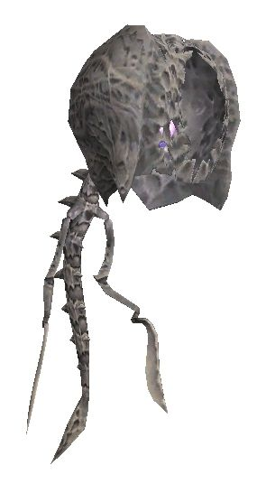
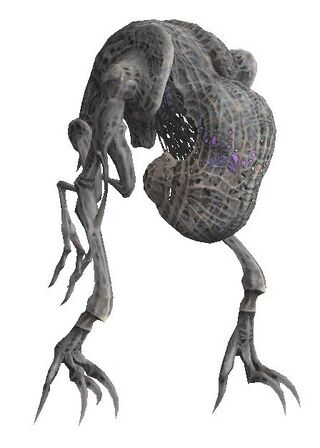
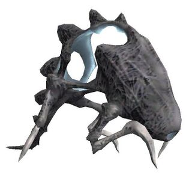
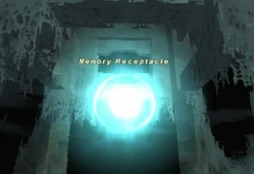

Description
Promyvion - Vahzl is a dungeon in Promyvion.
Map

Involved in Quests / Missions
| Quest / Mission | Type | Starter | Location |
|---|---|---|---|
| Empty Memories | General | Harith | Ru'Lude Gardens (H-5) |
Notorious Monsters
| Name | Level | Drops | Steal | Family | Spawns | Notes |
|---|---|---|---|---|---|---|
| Deviator | — | Recollection of Suffering White Memosphere | — |  WanderersImage source | 1 | Trade Cerebrator Remnant to ??? at L-10 on the 3rd island; A, L, T(S), Sc |
| Provoker | — | Recollection of Anxiety White Memosphere | — |  SeethersImage source | 1 | Trade Satiator Remnant to ??? at E-7 on the 5th island; A, L, T(S) Sc |
| Wailer | — | Recollection of Animosity White Memosphere | — |  WeepersImage source | 1 | Trade Coveter Remnant to ??? at L-6 on the 4th island; A, L, T(S), Sc |


Regular Monsters


Event Monsters
| Name | Level | Drops | Steal | Family | Spawns | Notes |
|---|---|---|---|---|---|---|
| Ponderer | — | — | — | ThinkersImage source | 1 | Spawned for mission: Desires of Emptiness; A, T(H) |
| Propagator | — | — | — | GorgersImage source | 1 | Spawned for mission: Desires of Emptiness; Assisted by: Offspring; A, T(H) |
| Solicitor | — | — | — | CraversImage source | 1 | Spawned for mission: Desires of Emptiness; A, T(H) |
| Memory Receptacle | 50 | — | — |  ReceptaclesImage source | 11 | Portals |
| Stray | 39-51 | — | — | WanderersImage source | 57 | Summoned by Memory Receptacles; A, L, T(S), Sc |
| Stray | 39-51 | — | — | WeepersImage source | 57 | Summoned by Memory Receptacles; A, L, T(S), Sc |
| Stray | 39-51 | — | — | SeethersImage source | 57 | Summoned by Memory Receptacles; A, L, T(S), Sc |

Story walkthroughs in this area
| Story | Mission / quest |
|---|---|
| CoP 5-1 | The Enduring Tumult of War |
| CoP 5-2 | Desires of Emptiness |
References
External references describe their own server or retail rules. Documented Zenith changes take precedence.
Map credits: Map 1 — HorizonXI Wiki. Original game maps © SQUARE ENIX; redrawn maps retain the credited authorship and license.

Additional level-75 reference
|
Part of the Emptiness - an insidious phenomenon that has begun to gnaw away at the land. The Empty roam the scorched land in search of prey. Connecting Areas
|
Involved in Quests/Missions
| Quest | Type | Starter | Location |
|---|---|---|---|
| Empty Memories | General | Harith | Ru'Lude Gardens (H-5) |
| Mission | Country | Starter | Location |
| Promathia Mission 5-2:Desires of Emptiness | Promathia Missions | ||
Notorious Monsters Found Here
| Name | Level | Drops | Steal | Family | Spawns | Notes | |||||||
|---|---|---|---|---|---|---|---|---|---|---|---|---|---|
| Deviator | Wanderer | 1 | A, T(S) | ||||||||||
| Offspring | Gorger | 2 | A, T(S) | ||||||||||
| Ponderer | Thinker | 1 | A, T(S) | ||||||||||
| Propagator | Gorger | 1 | A, T(S) | ||||||||||
| Provoker | Seether | 1 | A, T(S) | ||||||||||
| Solicitor | Craver | 1 | A, T(S) | ||||||||||
| Wailer | Weeper | 1 | A, T(S) | ||||||||||
|
HP = Detects Low HP; M = Detects Magic; Sc = Follows by Scent; T(S) = True-sight; T(H) = True-hearing JA = Detects job abilities; WS = Detects weaponskills; Z(D) = Asleep in Daytime; Z(N) = Asleep at Nighttime | |||||||||||||

Mobs Found Here
| Name | Level | Drops | Steal | Family | Spawns | Notes | |||||||
|---|---|---|---|---|---|---|---|---|---|---|---|---|---|
| Craver | 54 - 60 | Craver | 19 | A, T(S), Sc | |||||||||
| Gorger | 54 - 60 | Gorger | 19 | A, T(S), Sc | |||||||||
| Memory Receptacle | 50 - 50 | Receptacle | 11 Respawn: 20 minutes |
||||||||||
| Seether | 51 - 58 | Seether | 53 | A, T(S), Sc | |||||||||
| Stray | 39 - 51 | Wanderer | 57 | A, T(S), Sc | |||||||||
| Thinker | 54 - 60 | Wanderer | 18 | A, T(S), Sc | |||||||||
| Wanderer | 49 - 56 | Wanderer | 110 | A, T(S), Sc | |||||||||
| Weeper | 50 - 57 | Weeper | 127 | A, T(S), Sc | |||||||||
|
HP = Detects Low HP; M = Detects Magic; Sc = Follows by Scent; T(S) = True-sight; T(H) = True-hearing JA = Detects job abilities; WS = Detects weaponskills; Z(D) = Asleep in Daytime; Z(N) = Asleep at Nighttime | |||||||||||||
Adapted from Eden Wiki: Promyvion - Vahzl · Contributors and history · CC BY-SA 4.0. Revision 14953. Layout, links and optional background text adapted for Zenith.